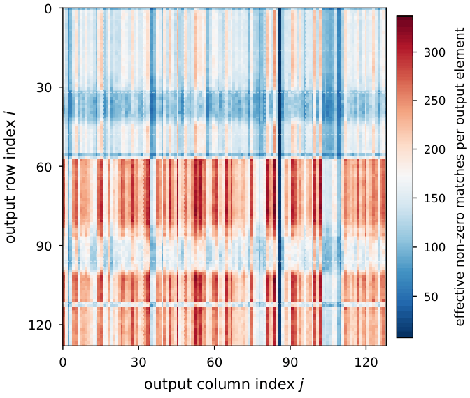

NeuroFlex: Lossless Element-Level ANN–SNN Co-Execution for Efficient Sparse Inference
Inside one sparse layer, some output elements are cheap to compute as spikes and others are cheap as multiply-accumulates. NeuroFlex sends each element to the core that suits it, without changing a single output bit.


The problem
Two ways to compute, with opposite strengths
Sparse accelerators skip operand pairs where either side is zero. Almost all of them still compute with multiply-accumulates (the ANN way). Spiking neural networks (SNNs) offer another way: they replace multiplies with cheap accumulates over binary spikes, which saves energy per operation, but a value is rebuilt over several timesteps, so latency grows. ANN execution is fast but power-hungry. SNN execution is efficient but slow.
The trade-off differs for every element
After zeros on both sides are skipped, the number of operations left for each output element varies several-fold within the same layer. Elements with many surviving matches are better served by fast ANN execution. Elements with few matches are better served by SNN execution, because fewer operations have to pay for the timestep overhead. This per-element variation is the opportunity that existing designs leave unused.
Hybrid accelerators switch too coarsely
Existing hybrid ANN–SNN accelerators capture only part of it. Layer-level designs switch a whole layer between modes, so one core type sits idle whenever the other is active. The paper measures PE utilization of only 40–45% for layer-wise hybrids. Tile-level designs do better, at 60–83%, but a tile that spans both dense and sparse elements still has to commit to one mode, and the finest-grained of these rely on a lossy ANN-to-SNN conversion, so routing a tile to the SNN core costs accuracy.
The real barrier: lossy conversion
Older conversion methods only minimize conversion error. That error can be averaged out across a layer, but a single output element has nothing to average against, so routing individual elements to SNN execution was considered unsafe. Accuracy and efficiency were coupled.
The approach
Per-element exact equivalence
PASCAL (Ramesh and Srinivasan, TMLR 2025) proved that an ANN with a quantized activation (QCFS) and its converted SNN give bit-identical results under integer arithmetic. Our key observation is that the proof only depends on local integer arithmetic for each output element: membrane updates, threshold comparisons and resets do not interact across output positions. So the equivalence holds for every individual output element, and any element can run as ANN or SNN with identical results. That removes the lossy-conversion barrier and unlocks element-level hybrid execution.
A cost-guided offline scheduler
Each element is scored by its marginal energy and latency cost on each core, based on its number of effective non-zero matches and coefficients measured from RTL microbenchmarks. The scheduler minimizes the layer's energy-delay product (EDP) with simulated annealing, starting from each element on its cheaper core and flipping assignments to balance load across PEs. The problem is NP-hard, but it solves in under 2 seconds for a 512×512 output. The resulting per-element mode mask is stored with the weights, so there is no runtime scheduling overhead.
Hardware that makes switching free
NeuroFlex pairs ANN and SNN cores (16 PEs each) that share one bitmap-encoded FiberCache and memory hierarchy. All data stays INT8, and spikes are generated on the fly inside the PE and never written to memory. Switching an element's mode therefore changes only the PE's control path, not the storage format or memory traffic.
Results
- Evaluated on seven models across CNNs (VGG-16, ResNet-34, GoogleNet), transformers (BERT, ViT-S) and LLMs (GPT-2 XL, OPT-6.7B).
- The cost-guided scheduler improves throughput by 16–19% over random element assignment, which shows the value of matching each element to the right core.
- Hardware synthesized at 560 MHz in a 40 nm node, with an RTL-backed cycle-level simulator.
- Limitation: the guarantees apply to models whose activations can be represented with QCFS.